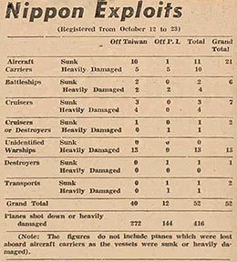

|
j
a v a s c r i p t |
October 25, 1944
Tribune: "Nippon air activity intensified, Leyte faces destruction.... Foe nailed to Leyte Beach." The Japanese control everything else, including the coast. Actually, MacArthur forces penetrated seven miles into the interior and took the San Pablo Airfield aided by some 4,000 guerrillas under Col. Ruperto Kangleon. At Palo, 75 Japanese entered the town disguised as civilians and started a gun battle at the plaza.

New Box Score
The Tribune prints a Taiwan box score with a total of 52 U.S. ships sunk or damaged, including 21 carriers, from October 12 to 23. Both Radio Tokyo and Nimitz announced The Greatest Naval-Air Battle in History is on. The landings in Leyte have left the Silent Navy no option but to finally come out in force and deliver on the propaganda promises. Halsey said that he would force the Japanese Fleet to fight if necessary. After 70 days at sea, his tired Third Fleet is meeting a fresh Japanese Fleet protected by land-based planes. As expected, Radio Tokyo announced results a good five hours before Nimitz did. I'll wait for the fog of battle to clear. There was an Alert and some antiaircraft at 0700 for just one plane (probably reconnoitering), followed by the All Clear at 1215. In the afternoon we got two Alerts and All Clears close on each other's heels. No planes came. |
|
|
|
|